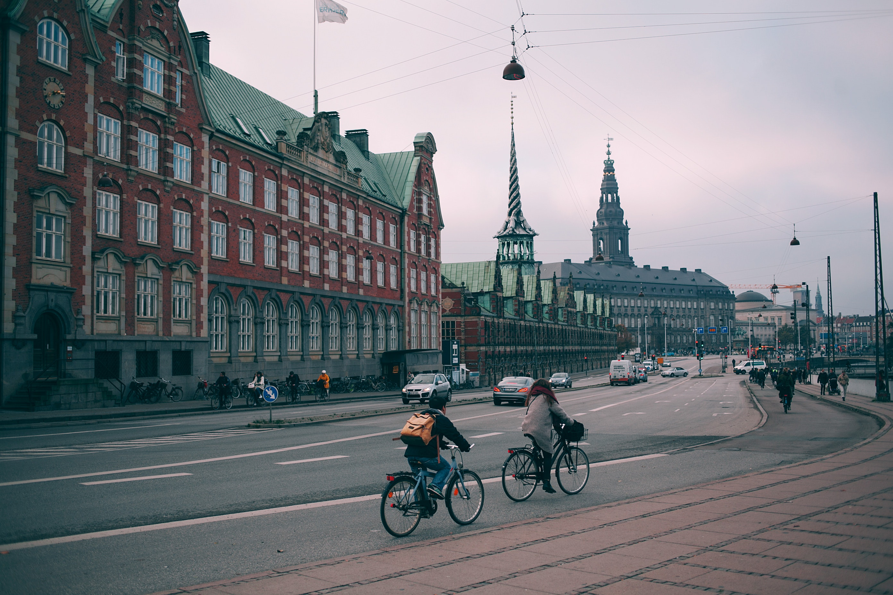

Tina's Travel Journal
Welcome to my travel blog featuring travel tips, packing guides,
videos and photography from around the world!

Welcome to my travel blog featuring travel tips, packing guides,
videos and photography from around the world!